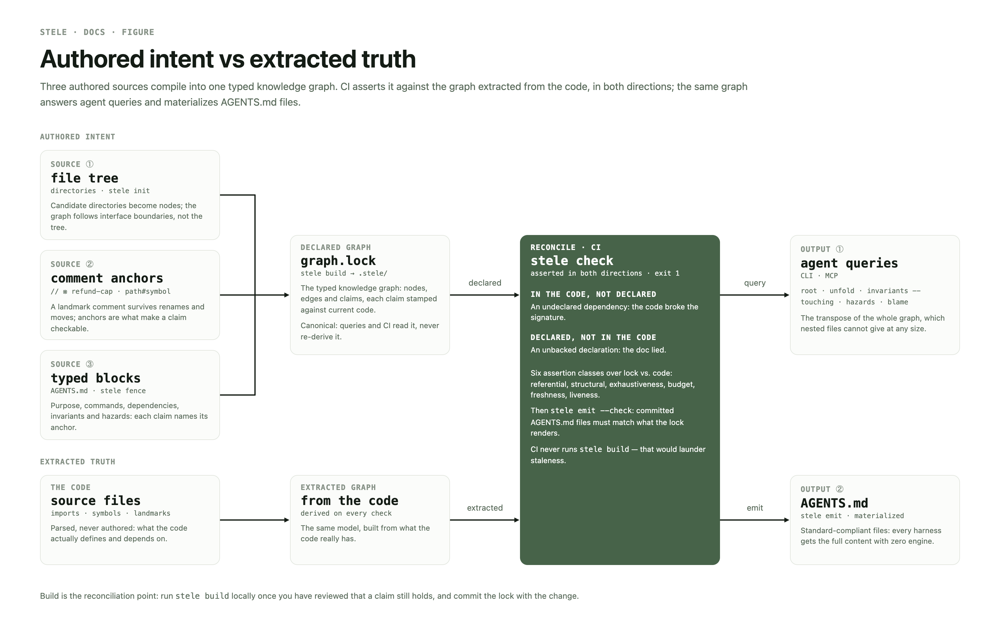
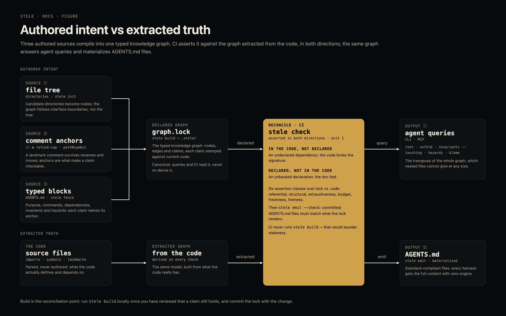
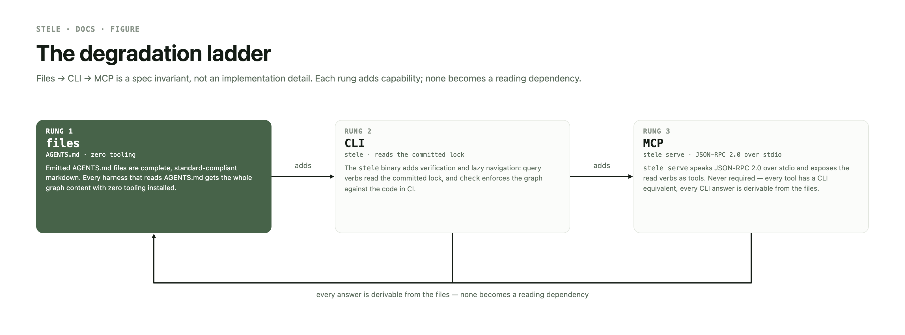
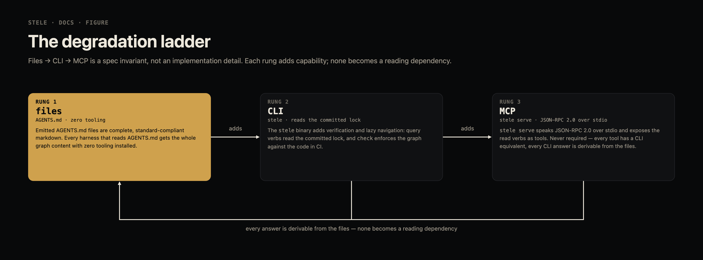

authored intent vs extracted truth
stele compiles a typed knowledge graph from three authored sources — the file tree, comment anchors, and typed blocks in AGENTS.md files — and reconciles it against a graph extracted from the code. CI asserts the two against each other in both directions: an undeclared dependency means the code broke the signature, an unbacked declaration means the doc lied. The same graph answers agent queries and materializes standard-compliant AGENTS.md files, so every harness gets the full content with zero engine.


stele /ˈstiːli/ — an inscribed standing stone that publicly declares the law. The territory is checked against it.
Why
The full argument, with citations, is research/report.md.
Measured evidence says coding agents don't benefit from prose overviews of a codebase — even human-written ones — and are actively harmed by stale or redundant context. What does transmit value: concrete tooling commands, non-derivable invariants and hazards, and navigation structure delivered lazily at the point of relevance. Every existing tool either generates docs from code (unverified, drifting) or checks declared architecture forward-only (never coupled to the docs agents read). stele occupies the empty intersection: the docs are a typed, queryable graph compiled from authored intent, verified against the extracted truth of the code, in CI, both directions — and they degrade to plain markdown files any harness can read.
Install
One static executable. The installer resolves a release, verifies the
sha256, and drops the binary in ~/.local/bin.
curl -fsSL https://raw.githubusercontent.com/jgeschwendt/stele/main/scripts/install.sh | bash
# pin a version curl -fsSL https://raw.githubusercontent.com/jgeschwendt/stele/v0.3.0/scripts/install.sh | bash -s v0.3.0 # prereleases curl -fsSL https://raw.githubusercontent.com/jgeschwendt/stele/main/scripts/install.sh | channel=canary bash
# from source
cargo install --git https://github.com/jgeschwendt/stele stele-cli
The degradation ladder
Files → CLI → MCP is a spec invariant, not an implementation detail. Each rung adds capability; none becomes a reading dependency.


Adoption path
Bare repo to CI-enforced graph. The long form is the guide; every rule behind it is in the spec.
- Install — one binary, pinned in CI to the version you tested against.
- Scaffold —
stele initfrom the repo root scaffolds AGENTS.md skeletons: asystemnode at the root,containernodes for candidate directories. Fill inpurpose, realcommands, and the claims worth enforcing; delete the skeletons that don't deserve a node. The graph follows interface boundaries, not the tree. - Anchor your claims — every invariant and hazard names an anchor:
path#symbolfor a definition or markdown heading, or※ <slug>for a named landmark comment (// ※ refund-cap) that survives renames and moves — theanchor:field quotes that token verbatim. Anchors are what make a claim checkable. - Build —
stele buildcompiles authored sources into.stele/graph.lockand.stele/index/. Build is the reconciliation point: it re-stamps each claim's verified mark against current code, so run it locally once you've reviewed that the claim still holds. - Emit —
stele emitrenders the router regions into AGENTS.md, the transpose indexes, and the shim. Anything outside a marker region stays yours. - Commit — the AGENTS.md files, the lock, the indexes. The lock is the
canonical graph: queries and CI read it and never re-derive it. Paths the engine should never
scan go in a root
.steleignore, gitignore syntax. - Enforce — CI checks out full history (freshness walks blame), then runs
stele checkfollowed bystele emit --check. CI never runsstele build— that would launder staleness. - Query — agents and humans read the graph instead of grepping docs, over the CLI or MCP.
stele init # scaffold nodes stele build && stele emit # compile the lock, render the files stele check # six assertion classes, exit 1 on violations stele emit --check # committed files vs what the lock renders
# the CI gate - uses: actions/checkout@v7 with: fetch-depth: 0 # full history — freshness checks use blame - run: curl -fsSL https://raw.githubusercontent.com/jgeschwendt/stele/v0.3.0/scripts/install.sh | bash -s v0.3.0 - run: ~/.local/bin/stele check - run: ~/.local/bin/stele emit --check
Notation
0.3.0's glyph notation: four glyphs plus an ASCII region marker, one
grammar. A glyph token is the glyph, one ASCII space, the payload — the same bytes in a
comment, in anchor: and in decided_by:, so a
node file quotes the code verbatim.
| slot | token |
|---|---|
| landmark | // ※ refund-cap |
| claim | // ⊨ billing/refund-cap |
| anchor: | ※ refund-cap |
| decided_by | § 0007 — resolves against the repo's ADR directory |
| region | <!-- @stele [name] --> … <!-- @end --> — name defaults to router; one per file, no nesting |
- a non-matching glyph is prose —
※is a common annotation mark in CJK comments, so※ 注意is silently ignored, never an error; a typo in a landmark a node references still fails referentially. ✻is reserved for human notes, and CLI addresses stay ASCII:stele blame billing/refund-cap— no glyph is ever typed into a shell.- upgrading from 0.2 is a hard cut — a version-1 lock fails every verb with
run stele migrate, then stele build.stele migraterewrites the oldstele:grammar in place over build's scan scope, idempotently; there is no dual-read. A 0.3.x version-2 lock carries no nodesourceand fails withrun stele build.
The assertion suite
Six classes over lock vs. code. stele check exits
nonzero with findings; --only <class> narrows it,
--run-commands actually executes documented commands,
--freeze accepts the current structure as the baseline, and
--json gives the machine envelope.
| class | catches |
|---|---|
| referential | anchors pointing at symbols, landmarks, or files that no longer exist |
| structural | declared dependencies the code doesn't have — and code dependencies never declared |
| exhaustiveness | directories no node covers — unrouted context an agent can't navigate to |
| budget | node docs exceeding their token budget |
| freshness | anchored code changed since the claim was last verified (stele blame <node>/<slug> shows who and when) |
| liveness | documented commands: that no longer resolve or run |
stele emit --check is the
seventh gate in practice: it fails when committed AGENTS.md files diverge from what the lock
would render.
Query surface
Plain subcommands and flags — no query grammar. The cross-cutting queries are the capability nested files cannot provide at any size: the transpose of the whole graph, materialized from one lock.
stele root # the system node — start here stele unfold payments --depth 2 # a node with its neighbours, two hops out stele invariants --touching src/charge.rs # claims governing the file you're editing stele hazards # every active hazard stele nodes --kind container # the graph by kind stele blame payments/idempotent-charges # provenance of one claim
For MCP-capable harnesses,
stele serve exposes the same read verbs as tools:
{ "mcpServers": { "stele": { "command": "stele", "args": ["serve"] } } }
Undercover mode
v0.2.0's headline. When you're the only stele user on a shared repo — a work, upstream, or open-source checkout whose collaborators must never see a stele artifact — run the graph privately.
stele init --undercover
- the graph home is the parent of the git common dir — the repo root in a normal checkout, the shared bare root in a grove layout, so every linked worktree reads the same private graph and it survives worktree churn.
- node sources live in an untracked overlay —
<home>/.stele/tree/<dir>/AGENTS.md, mirroring tree paths, alongside the private lock and transpose indexes. - one materialized file —
CLAUDE.local.md, a relative@-import of the overlay root that Claude Code auto-loads. Analogous to any other.localfile: yours, never committed. - git status stays clean — a managed block in the
common dir's
info/excludehides the private paths. Only the marker's presence selects the mode; without it every command is byte-for-byte normal. - the ladder trades its files rung for invisibility —
no CI story, because nothing is committed for a pipeline to gate;
stele checkis yours to run locally, and your surface is CLI → MCP plus the shim.
Next
What the next shift does first. shift brief reads this list, and a landing that changes it edits it here.
- Lock version 3 is on trunk unreleased: a v0.3.0-pinned CI rejects a v3 lock, and both builds report
stele 0.3.0. The 0.4.0 release (version bump, GUIDE's CI pin, tag) waits on the owner's threaddecision:jgeschwendt/stele:release-0.4.0. - Extractors: imports from Python packages outside the repo root and a Rust crate whose
src/another node owns; a NodeNext./y.jsspecifier namingy.ts, and.mts/.ctsfiles; a fully qualifiedb_core::g()with nouse, and a brace-rooteduse {…}list. - Liveness false errors:
cargo +nightly fmt,cargo --locked test,npm run -s build, mix tasks from deps such asphx.server, commands after a newline, and subshells,!andif/for/while. A first attempt was reverted (e8fa9d5): a{:test for "declares deps" also matched the stockmix newcomment, and splitting on newlines broke heredocs and comment lines. The fix needs a tokenizer that understands heredocs,#comments and\continuations, flags that take a value, and an owner decision on how lenient dep tasks should be. - A lock built on an unborn HEAD stamps every claim
verified: null, and freshness skips a null watermark, so the greenfield flow (init, build, first commit) is never fresh-checked. Needs a call: re-stamp on the first build with a HEAD, or report null as a finding. - A heading anchor below a node AGENTS.md's generated region records its on-disk line, so an
emitthat resizes the region stales the lock just built (build → emit → commit, thencheckexit 2). Needs a call: stamp heading anchors region-independently (the lock'sfile:linethen stops matching the file), or haveemitre-stamp. --run-commandshas no timeout, so a background child holding the pipe hangscheck. This needs a SPEC knob first.- Sparse checkouts: index-tracked paths outside the cone (skip-worktree) read as absent — anchors there go unresolved and a lock outside the cone reads as missing. Needs a call: read those paths from the index, or refuse a sparse tree; the owner's thread is
proposal:jgeschwendt/stele:sparse-checkout. servesilently drops undeclared or ill-typed tool arguments, but MCP requires servers to validate inputs. Needs a §5.2 sentence first:proposal:jgeschwendt/stele:serve-input-validation. §5.2's list of unexposed mutating verbs also omitsmigrate.- Two edge cases the spec leaves open:
anchor: refund-cap(no※, no#) builds clean, thencheckreports0 definitions of "". A tracked AGENTS.md deleted without staging is exit 3, but a deleted code file is skipped.
Artifacts
The repository carries the whole design; this page is a summary of the first two.
| artifact | what it is |
|---|---|
| docs/guide.html | the adoption path — install, scaffold, anchor, build, enforce, query, undercover |
| docs/spec.html | the contract — model, sources, assertion suite, query surface, process contract |
| EXAMPLE.md | worked example on a fictional monorepo: every artifact, an agent session with token accounting, a CI failure gallery |
| research/claims.md | the claim ledger C1–C26 — every [Cn] citation in the SPEC resolves here |
| research/findings/ | primary-source research notes, including the prior-art sweep that positions the design |
| research/report.md | the evidence base — cited survey the design decisions trace to |
| research/wild-ideas.md | the ideation corpus the design was selected from — three visions; v2 extension points derive from it |
| jgeschwendt/stele | the engine — a Rust single binary, self-hosting on its own graph |
stele v0.3.0 · SPEC Draft 0.10 · the spec and the guide are the contract · PolyForm Noncommercial 1.0.0; commercial use needs a separate license.